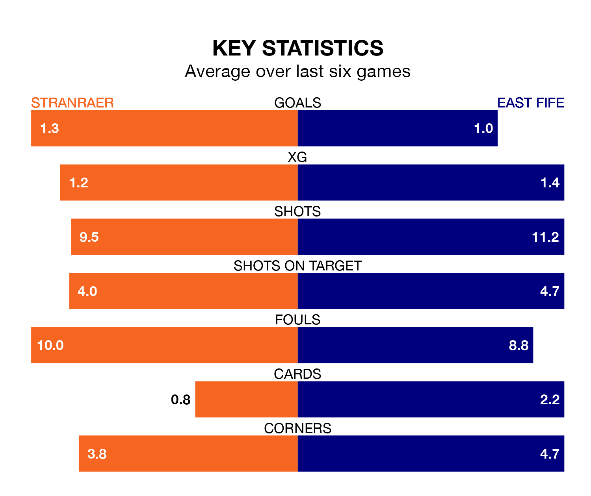

Stranraer host East Fife on Saturday at Stair Park in League Two.
In their last league match, on January 20, Stranraer lost to Stenhousemuir 1-0 away.
East Fife drew, 2-2 at home against Peterhead, with Jonathan Page and Nathan Austin on the scoresheet.
In the last 10 years, Stranraer and East Fife have played each other on 24 occasions. Stranraer won seven of them, East Fife nine, and they drew eight times.
On average, Stranraer scored 1.2 goals and the Fifers 1.9 in those matches.
Their last meeting was on October 21, when East Fife won 4-0 at home.
In Allan Fleming, East Fife can rely on one of the league's safest pair of hands. He has kept five clean sheets in his 20 appearances this season, and only two other 'keepers – Stenhousemuir's Darren Jamieson and Forfar Athletic's Marc McCallum – have been able to prevent the opposition scoring on more occasions in League Two.
In Stranraer's net, Martin McDonald has two clean sheets in seven games.
With 24 goals in 20 games so far this season, the hosts are scoring at below the league average rate with 1.2 goals per game. And they are conceding more than average, letting in 38 goals at a rate of 1.9 per game.
The Fifers, meanwhile, are average scorers, with 1.4 goals per game. They have also conceded 1.4 goals per game.
Stranraer are in mixed form in League Two, with two wins and a draw from their last six games.
With a win and three draws over that period, the away side's form is slightly worse – they have taken six points from 18, compared to Stranraer's seven.
The home team are seventh in the table after 20 games, of which they have won six and drawn four, earning 22 points.
East Fife are one place ahead of Stranraer in sixth, with five wins and seven draws putting them on the same number of points.
Updated: 09:18 (UTC), 23/01/24